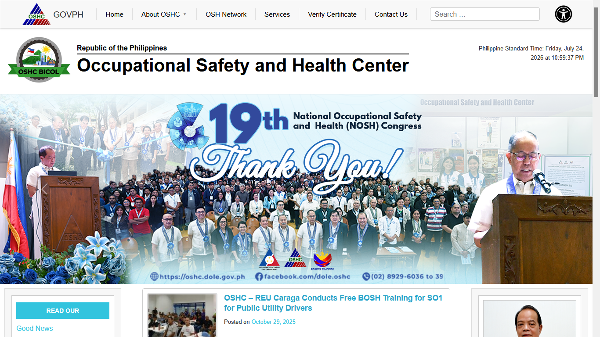

oshc-clone.js

OSHC Website Clone
A responsive front-end replica of the Occupational Safety and Health Center (OSHC) website built with Vue.js. Developed as a client-requested project to accurately recreate the original design, layout, and user experience while showcasing modern front-end development practices.
Vue.jsJavascriptBootstrap5HTML5CSS3VercelViteResponsive Design
View Live Demo